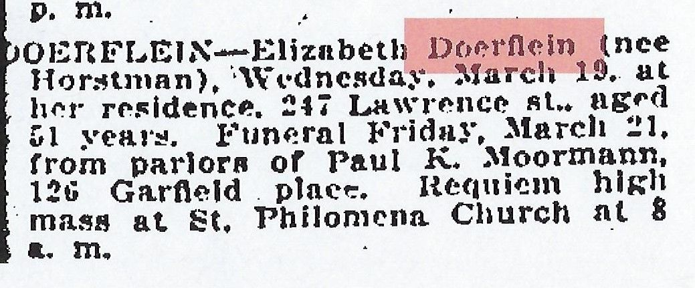

26 July 1867 – 19 March 1919
Open this person’s GitHub folder. The folder contains the profile, dated research note, source note, and any available image files.
26 July 1867 Born in Cincinnati, according to the Find a Grave memorial and posted certificate excerpt.
1886 Find a Grave reports marriage to Jacob A. Doerflein.
19 March 1919 Died in Cincinnati; buried at Saint Mary Cemetery, according to the memorial.
Elizabeth’s Find a Grave memorial includes an excerpt of an Ohio state death certificate (1919 file number 19295) and contributor-entered links to Jacob and their children. The posted excerpt reports her Cincinnati birth and death and names her father as Henry Horstman and mother as “Bernadina Cr...” (both born in Germany). The memorial’s family links identify Johan Heinrich Horstman and Bernadina Crone Horstman. Those name forms are retained as two source wordings; the original certificate has not been independently inspected.

The memorial search result indicates no grave photo. The page’s one image is an obituary clipping (not a portrait); it is used only with that label.
The death-certificate excerpt’s maternal surname is truncated as “Cr...”; the memorial family links spell Bernadina’s surname Crone. Preserve this discrepancy; no original certificate was directly reviewed.
No DNA information added.
Part of the George A. Barnhorst × Elsie M. Doerflein Barnhorst family research. Family relationships are attributed to the sources below; compiled memorial links are not original civil records.
Created 27 November 2026: parent profile and folder added; attached obituary clipping with its source attribution; linked to Elsie M. and Jacob A. Reciprocal child links verified after deployment.
No verified profile-contribution link is currently attached to this page.